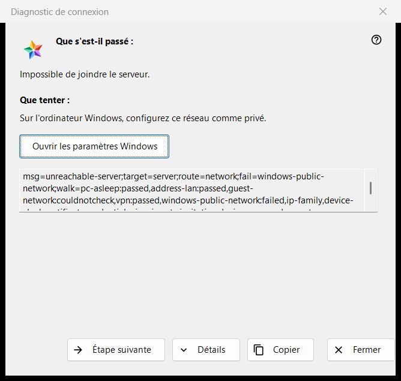
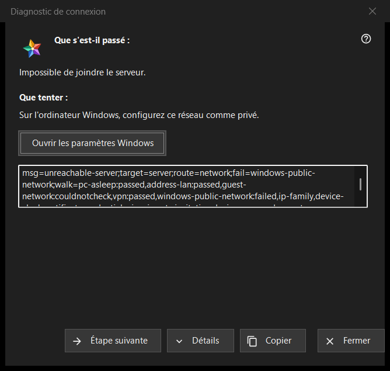

Diagnostic de connexion
Objectif
Explique pourquoi un serveur ou un appareil est injoignable et propose ce qu'on peut essayer, une étape à la fois. Il ne modifie aucun paramètre de l'ordinateur ni de Windows. La fenêtre s'ouvre depuis «Pourquoi la connexion échoue-t-elle ?..» dans le menu «Plus» de la liste des ressources (pour une ligne sélectionnée), depuis une entrée de serveur de «Mes appareils» qui se reconnecte, présente un certificat modifié ou ne peut pas se connecter, et d'elle-même lorsque l'ouverture d'une ressource échoue.


Dans cet ordre
- Lisez «Que s'est-il passé :».
- Essayez ce que dit «Que tenter :».
- Si ce n'est pas la cause, appuyez sur «Étape suivante».
- Appuyez sur «Détails» si quelqu'un demande les codes, et sur «Copier» pour les transmettre.
- Fermez la fenêtre.
Les éléments
Ce qui s'est passé
Une phrase sur l'échec, par exemple «Impossible de joindre le serveur.», «L'identifiant ou le mot de passe est incorrect.» ou «Ce serveur ne correspond pas à celui précédemment connecté.». Elle suit le type d'échec qui a ouvert la fenêtre.
Que tenter
La fenêtre commence à la première étape qui a échoué lors de la vérification, ou à la première étape si aucune n'a échoué. Étapes typiques : réveiller l'appareil qui exécute le serveur, vérifier que les deux appareils sont sur le même réseau, quitter un Wi-Fi invité, désactiver un instant un VPN, régler le réseau Windows sur privé, vérifier le serveur depuis un autre réseau, régler correctement la date et l'heure, confirmer une nouvelle empreinte, ressaisir l'identifiant et le mot de passe. La dernière étape dit que seul l'administrateur du serveur peut y remédier.
Étape suivante et Paramètres Windows
«Étape suivante» fait avancer dans les étapes et disparaît à la dernière. Pour les deux étapes que les paramètres Windows peuvent corriger, le profil réseau et l'horloge, un bouton «Ouvrir les paramètres Windows» ouvre la page Windows correspondante ; le programme ne change rien lui-même.
Détails et Copier
«Détails» affiche ou masque une zone en lecture seule contenant les codes du diagnostic : le type d'échec, la cible, la route, l'étape en échec et les étapes parcourues. Elle ne contient jamais d'adresse, d'identifiant, de mot de passe ni d'empreinte. «Copier» place cette ligne dans le presse-papiers et la fenêtre indique «Codes de diagnostic copiés dans le presse-papiers.»
Comment fonctionne la vérification
La vérification ne porte que sur la connexion que vous avez tentée et ne fait que lire : elle essaie de joindre l'hôte et le port et examine l'état du réseau, les adaptateurs VPN, le profil réseau Windows, la famille d'adresses, l'horloge et le certificat. Elle s'arrête à la première étape en échec, et une vérification qui n'a pas pu être faite n'est jamais comptée comme réussie ni comme échouée.